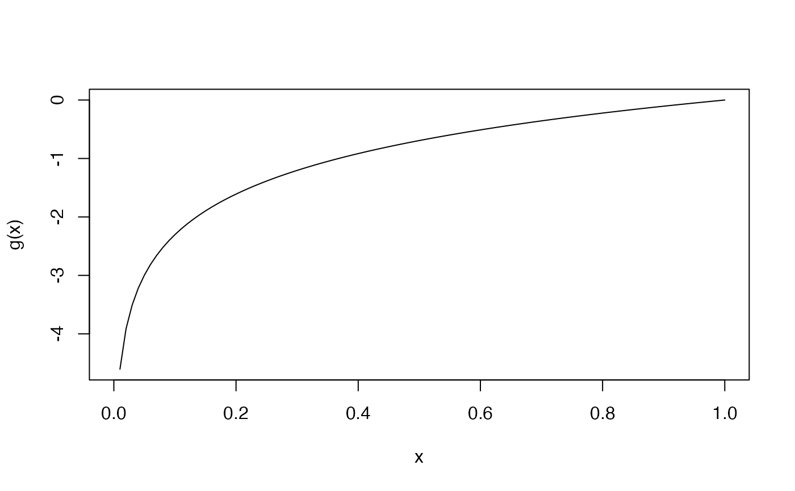
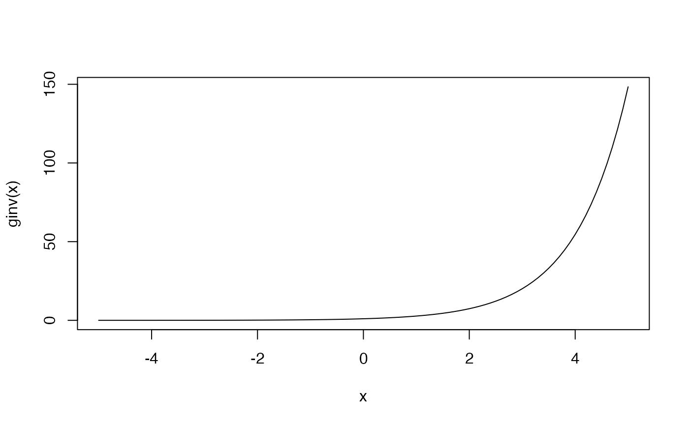

log_link object provides a way to implement logarithmic link function that
maxlogL needs to perform estimation. See documentation for
maxlogL for further information on parameter estimation and implementation
of link objects.
log_link()
A list with logit link function, its inverse and its name.
log_link is part of a family of generic functions with no input arguments that
defines and returns a list with details of the link function:
name: a character string with the name of the link function.
g: implementation of the link function as a generic function in R.
g_inv: implementation of the inverse link function as a generic function
in R.
There is a way to add new mapping functions. The user must specify the details aforesaid.
Other link functions:
NegInv_link(),
logit_link()
# One parameters of normal distribution mapped with logarithmic function x <- rnorm(n = 10000, mean = 50, sd = 4) theta_2 <- maxlogL( x = x, link = list(over = "sd", fun = "log_link") ) summary(theta_2)#> _______________________________________________________________ #> Optimization routine: nlminb #> Standard Error calculation: Hessian from optim #> _______________________________________________________________ #> AIC BIC #> 56141.47 56155.89 #> _______________________________________________________________ #> Estimate Std. Error Z value Pr(>|z|) #> mean 49.95690 0.04007 1246.9 <2e-16 *** #> sd 4.00657 0.02833 141.4 <2e-16 *** #> --- #> Signif. codes: 0 '***' 0.001 '**' 0.01 '*' 0.05 '.' 0.1 ' ' 1 #> _______________________________________________________________ #> Note: p-values valid under asymptotic normality of estimators #> ---#> [1] "log"